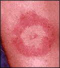
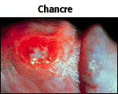

Case Study 2
Boy with fever and rash
Correct!
|  |
The diagnosis is? A. Lyme Disease
The patient's rash (erythema migrans) and his other symptoms, fever and a stiff neck, along with the geographic location suggest that the patient is suffering from Lyme disease. The rash is typically ring-shaped, centered on the site of inoculation, and expands and moves outward. |
C. Poison Ivy
Syphilis is a sexually transmitted disease caused by Treponema pallidum, a spiral-shaped bacterium. Syphilis can progress through four stages with dramatically different clinical presentations. 
Used with permission of
© Dr. Norm Levine
Primary syphilis is characterized by a skin lesion at the initial site of entry of the infectious agent and usually occurs 2 - 10 weeks after infection. The patient's rash is on his back, this is a very unlikely port of entry for syphilis. Also the skin lesion in primary syphilis, referred to as chancre, looks quite different from the rash seen in your patient.
Contact with poison ivy can result in a skin rash and even fever depending on the individual's sensitivity. However, the onset of symptoms is typically 24 - 48 hours after exposure, your patient reported being in the woods 5 days ago. A rash from poison ivy is usually preceded by severe itching, which was not reported by your patient. The rash caused by poison ivy is often characterized blistering of the skin unlike the rash observed in your patient.


University of Arizona
Tuesday, August 4, 1998
Contact the Development Team
http://biology.arizona.edu
All contents copyright © 1998. All rights reserved.